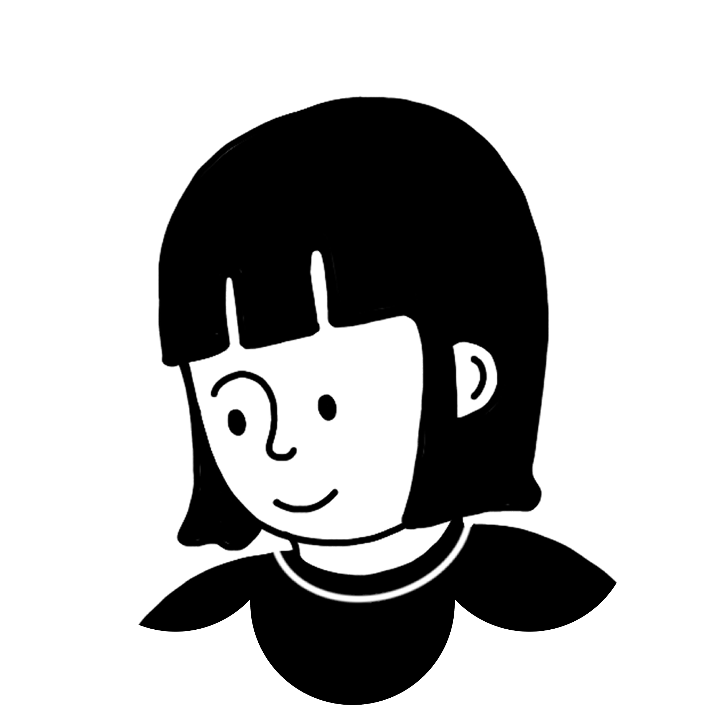
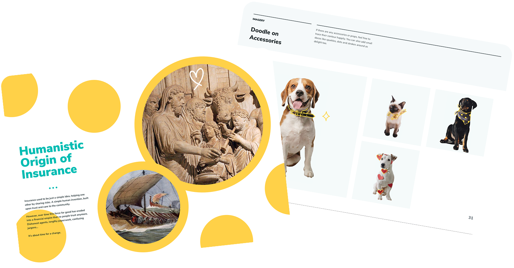
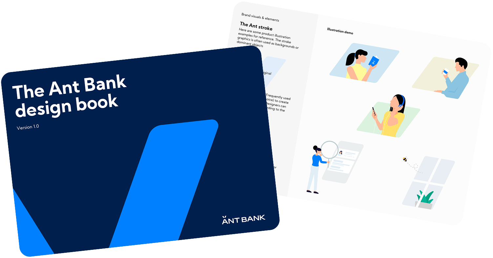
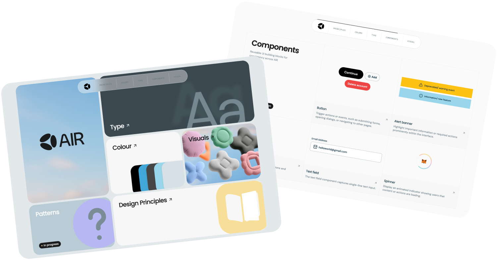
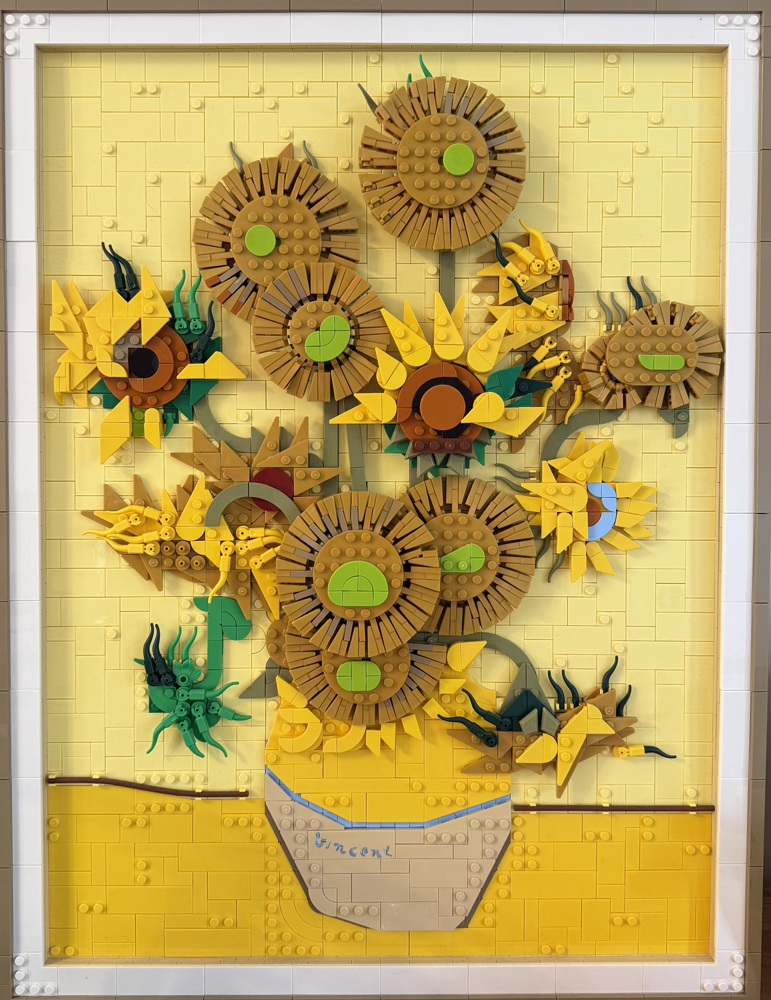
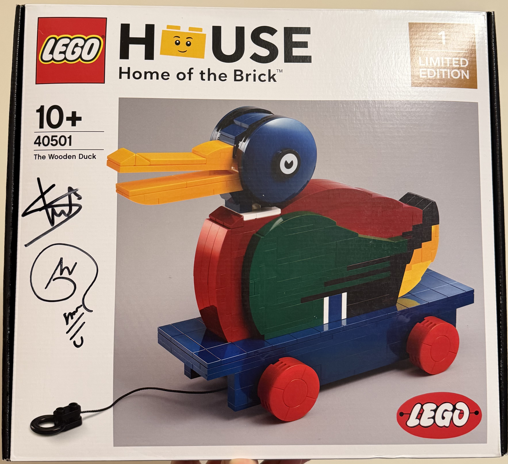

Hi I'm 
Rachel Wong, a based in Hong Kong .
Currently at Moca Network @ Animoca Brands as a solo designer.
Previously at crypto.com, Ant Financial and OneDegree, building products from 0 to 1.
Design is more important than ever. I enjoy building strong design foundations
  
Outside of design, I am sharing my toy collections on @omocha.labo, building  
It's --:--:-- in Hong Kong